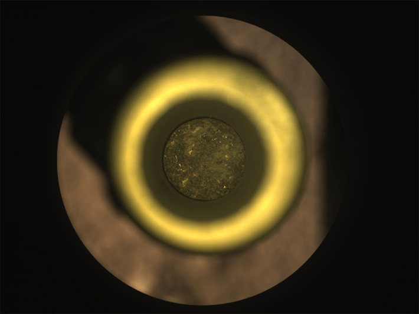

Roughly 62 million miles away on the surface of Mars, the Perseverance rover is collecting rocks. Black, red, and gray colored regolith and cores, some of which are the width of a pencil. Over a little more than three years, the rover has filled 24 titanium sample tubes, each about the size of a cigar, with these bits of planetary sediment.
Scientists believe the Mars rocks could help resolve big questions about the red planet, including its evolution, mineral makeup, the likelihood it once had oceans and rivers, and whether microbial life teemed there in the past. But the question is how to get the Mars rocks back to Earth.
When Perseverance landed on Mars in February 2021, NASA had an elaborate plan to retrieve the rocks for study back on our home planet—the Mars Sample Return mission. It involved numerous different spacecraft and machines making multiple handoffs. They were going to land another probe near the Perseverance, send out a second “fetch” rover to collect the sample tubes, and then load them into a rocket-powered capsule with a robot arm. The capsule would then blast-off from Mars and rendezvous with yet another probe in orbit, which would carry it through interplanetary space back to Earth. Finally, the capsule would splash-down in an ocean on Earth, and the rock samples would be recovered for study.
"For most planets we’re only at the fly-by stage."
The costs of such a complicated space mission, however, blossomed out of control. Last week, the agency announced it was considering two new strategies for returning the rocks to Earth that it hopes will cost about half as much—although many of the details are still being worked out.
Perseverance has placed some of the sample tubes at “depots” during its explorations and carries others with it—so the only prospects for retrieving them require getting down to the Martian surface. But landing a probe or rover on Mars is notoriously difficult, and more than half of the attempts have failed. The planet’s gravity and thin atmosphere make it difficult for objects to float gently to the surface with a parachute. But the atmosphere is also thick enough that friction can easily burn up a spacecraft upon entry.
Another complication is that nobody has ever launched a rocket into space remotely from another planet, nor transported any material from space back to Earth without a human escort. Such an achievement in the face of so many difficulties would rank alongside the greatest scientific developments in history, says planetary scientist Harry McSween of the University of Tennessee Knoxville. “For most planets we’re only at the fly-by stage,” he says.

WE WILL ROCK YOU: A sealed titanium sample tube containing the first sample of Mars rock collected by the Perseverance rover. Photo by NASA/JPL-Caltech.
Details of the latest Mars rock return proposals are scarce, but the agency seems to hope to save dollars by re-using technologies developed for other space missions, such as a cheaper robot arm to load the Mars rocks into the rocket capsule. The agency also plans to eliminate the “fetch” rover, which would have cost a lot to develop. Instead, the Perseverance rover itself could transport many of the rock samples to the ascent vehicle, though this may mean some samples have to be left behind. Alternatively, a “Mars helicopter” based on the Ingenuity drone could potentially retrieve them. The mission timeline has also been sped up: NASA now hopes to bring the Mars rocks back in the late 2030s, rather than in 2040.
One possibility NASA is now considering to overcome the difficulty of landing a probe on Mars is to use a “sky crane,” the same technology that delivered both the Perseverance and Curiosity rovers to the Martian surface by lowering them on cables from a rocket-powered descent stage. The other alternative would involve figuring out a way to land on Mars with large probes launched from Earth by a “heavy-lift” rocket, such as the SpaceX Starship or the New Glenn rocket from Blue Origin. According to Casey Dreier, the chief of space policy at the Planetary Society, this second option might be a way for NASA to hedge on new landing technologies, including some that may not have been invented yet.
McSween says the Mars rocks could reveal important clues about ancient life on the red planet, including whether it really had surface oceans between 3 and 4 billion years ago. The rocks could also help us prepare to send a human explorer to Mars. “It would help us know what Mars dust would look like, and the medical hazards of ingesting it,” for instance, he says.
Scientists have already studied some Martian rocks here on Earth: Roughly 277 “Martian meteorites,” thrown into space by asteroid impacts and the eruptions of Martian volcanoes, have landed on our home planet. But these Martian meteorites tend to be less than 1 billion years old—and therefore too young to resolve questions about the planet’s early evolution—while Perseverance is now sampling rocks that may be up to 4 billion years old, says McSween.
Back on Earth, scientists will be able to study the Mars rocks with an almost boundless variety of instruments and tests, says planetary geologist Victoria Hamilton of the Southwest Research Institute in Boulder, Colorado. She points to the lunar rocks brought back by moonwalkers during NASA’s Apollo project, which are still being studied more than 50 years later. “The Mars rocks are going to be here for generations.” 
Lead image: Artmim / Shutterstock